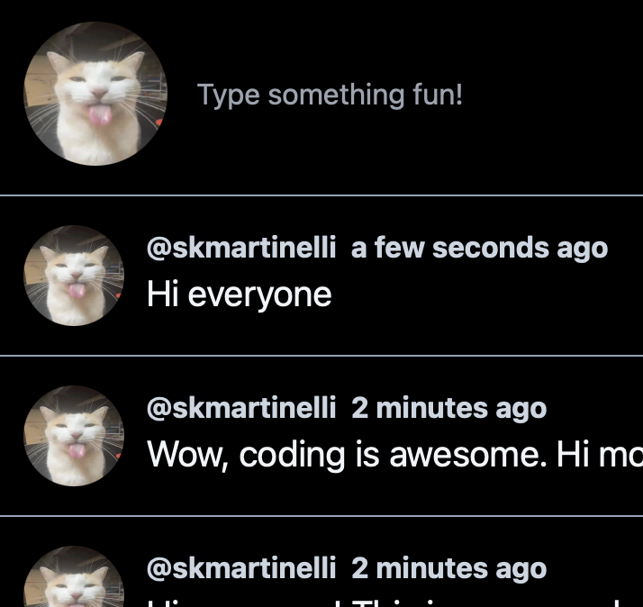

Brickset Web Scraper
October 2023
Wrote a python web scraping script to get labeled images of all current lego minifigs from Brickset.com. Utilized BS4 and multithreading to process upwards of 14,000 image requests in minutes.
Repository

Chirper
September 2023
Created a Twitter clone using Next.js, TypeScript, and Tailwind CSS for the frontend, and tRPC, Prisma, and Clerk for the backend and authentication. Still a WIP but user authentication and basic CRUD is functional.
Repository DemoLive Birds
December 2022
Static site built to host Live Photos of birds that I took. On mouse-over on Chromium browsers the images will autoplay as a video.
Repository Demo